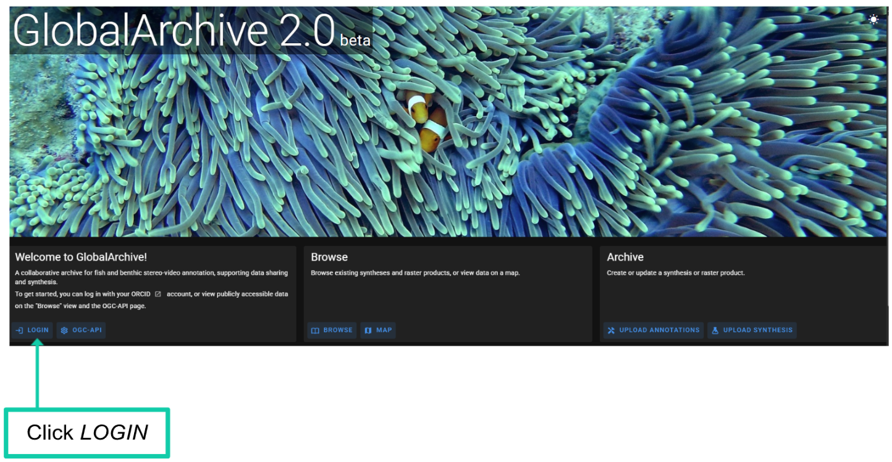
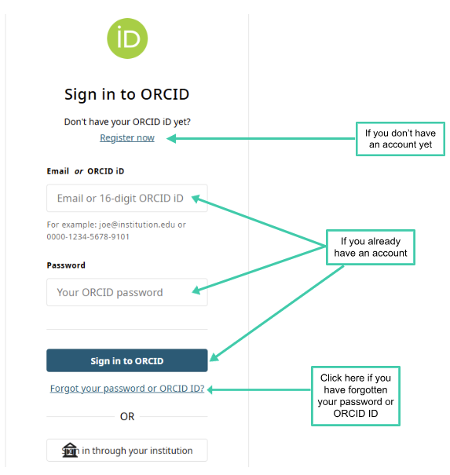

Create Account
create-account.RmdCreate an account
Navigate to GlobalArchive.org 2.0
Click LOGIN


GlobalArchive uses ORCID IDs for user authentication.
-
If you already have an ORCID:
- Enter your account details. Click Sign in to ORCID.
-
If you don’t have an ORCID:
- Select Register now and create an ORCID.
-
If you have forgotten your ORCID ID or password
- Click ‘Forgot your password or ORCID ID?’ and follow the instructions on the page.